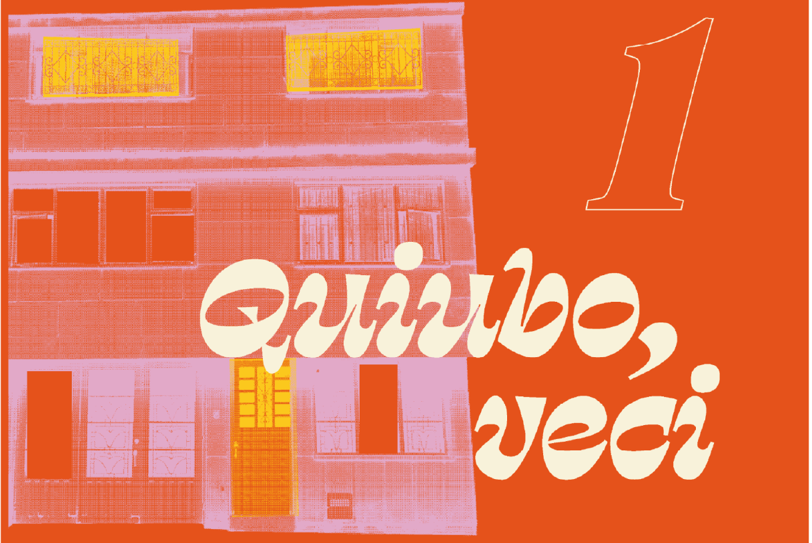
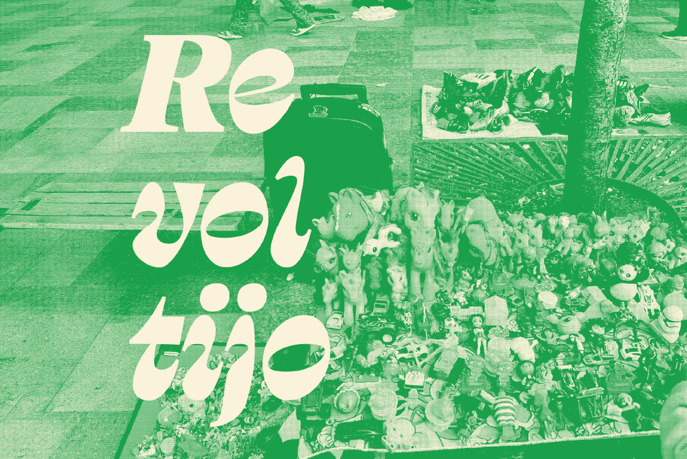
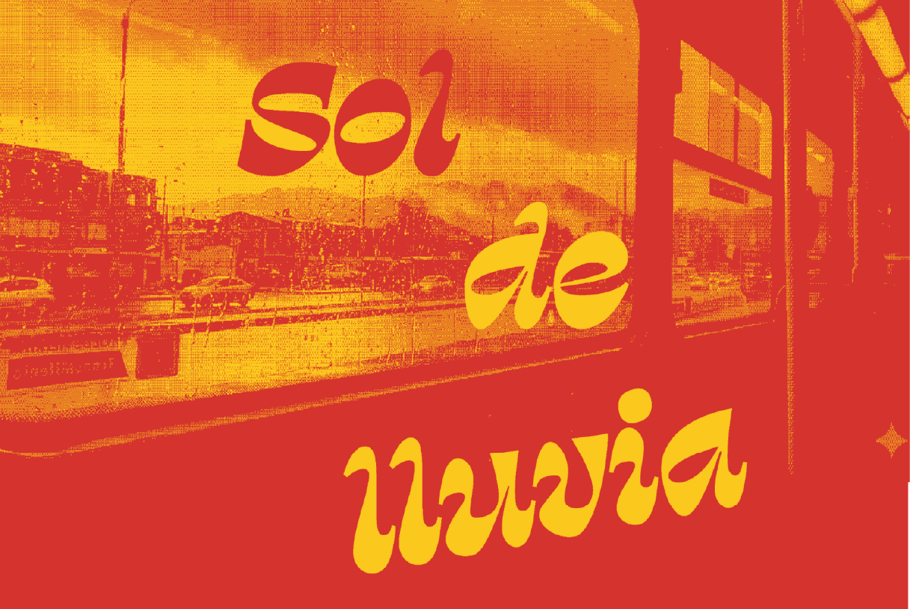

Bien Pueda > Quiubo Veci
Conoce cómo las rejas cambiaron la percepción Bogotana.
Emily Vargas Dalis
Barrios Comerciales > Revoltijo
Los barrios comerciales se convirtieron en espacios donde convergen cultura, economía e identidad popular. Lugares como San Victorino, Restrepo o Chapinero reflejan el movimiento constante de la ciudad, mezclando colores y comercio.

Para seguir disfrutando nuestro contenido
Compra aquí ¡Lo tengo!
Conoce cómo las rejas cambiaron la percepción Bogotana.
Emily Vargas Dalis

Conoce como cambio la manera en que Bogotá se mueve.
Emily Vargas Dalis